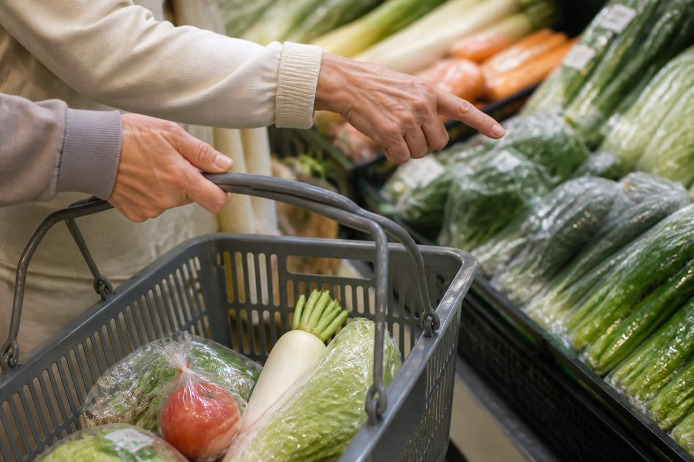

日々のお買い物を、
とよサポがサポートします。
重いお米や日用品の買い出しなど、日々の買い物をとよサポがサポートします。お届けする「買い物代行」と、一緒に歩く「買い物付き添い」から選べます。

こんなお悩み、ありませんか？
- お米や飲料水など、重い荷物を運ぶのが大変…
- 近くにスーパーがなく、日々の買い物に行くのが難しい…
- 天気が悪い日や体調が優れない時に、代わりに買い物に行ってほしい…
そんなお悩みは、ぜひ地域密着の「とよサポ」へご相談ください。
お客様に代わってスーパーやドラッグストアへ行き、ご指定の商品を購入してご自宅までお届けします。
また、徒歩での買い物同行など、お客様の暮らしに合わせたサポートを親切丁寧に対応いたします。
選べる2つの買い物サポート
買い物代行（お届けプラン）
- 重いもの（お米・飲料・日用品・灯油など）の持ち運びが困難な方
- 外出するのが難しい状況にある方
- 時間を有効活用したい方
ご指定の品をご自宅までお届け
事前にお電話やLINEなどで「購入したいもののリスト」をお伝えいただければ、スタッフが代わりに店舗へ行き、商品を購入してご自宅の指定場所（玄関先やキッチンなど）までお届けします。丁寧な荷扱いと、分かりやすいお会計（購入レシートを必ず添付）で安心してご利用いただけます。
買い物付き添い（歩行サポート）
- 自分で商品を選びたいが、一人で歩いて買い物に行くのが不安な方
- 買い物の荷物が重くて、帰り道に持てなくなってしまう方
- スタッフと一緒に楽しく安全に買い物をしたい方
安全な徒歩移動と荷物持ちをお手伝い
近隣の店舗への徒歩での買い物にスタッフが同行し、安全な歩行のサポートや段差での見守り、購入した重い荷物をお持ちするサポートをいたします。安全を最優先にし、寄り添ったサポートを行います。
※本サービスにお車での送迎は含まれませんので、予めご了承ください。
料金のご案内
※上記は標準的な時間（1時間以内）における料金の目安です。作業時間や購入店舗数によって正確な料金が変わります。
※お見積りは無料ですので、まずはお気軽にご相談ください。
※現地調査・事前打ち合わせが必要な場合は3,300円（税込）がかかります。ただしご成約の場合は費用は発生致しません。
※下関市内は出張費（エリア料金）無料です。 その他の詳しい料金表を見る
ご利用の流れ
- 1
お問い合わせ
お電話またはLINEにて、「買い物の代行をしてほしい」とご連絡ください。ご希望の品や日時を伺います。
- 2
ご相談・お見積り
担当スタッフが買うもののリストや代行内容を確認し、事前にお見積りをご提示します（ご相談やお見積りは無料です）。
- 3
買い物実施・お届け
ご納得いただけましたら、ご指定の店舗でお買い物を行い、ご自宅まで丁寧に商品をお届けします。
- 4
ご確認・お支払い
商品と購入時のレシートをご確認いただき、お支払い（商品代の実費 ＋ 代行料金 ＋ エリア料金）となります。